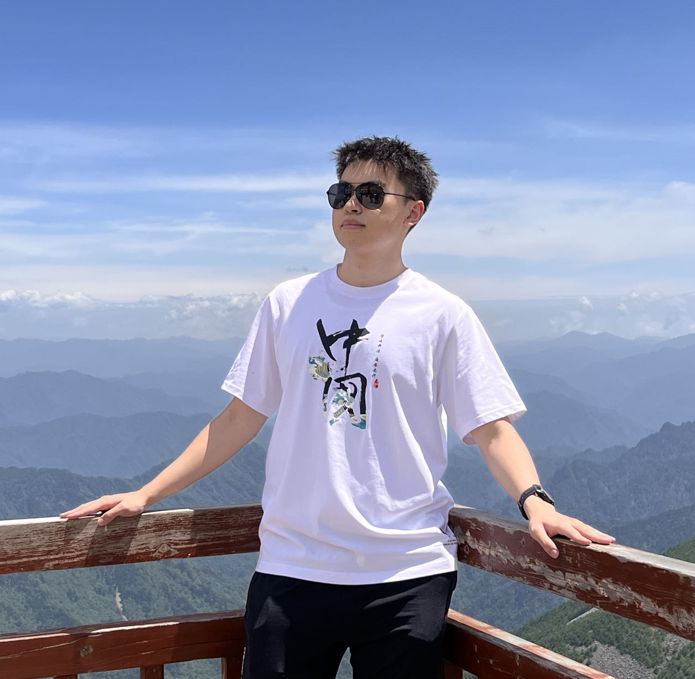

Yitao YANG
|  |
Yitao YANG, Ph.D. student
|
BIOGRAPHY
I am currently a first-year Ph.D. student at the Department of Computer Science and Engineering of The Chinese University of Hong Kong under the supervision of Prof. Hong Xu and co-supervised by Prof. Baochun Li. Previously, I received my B.Eng. from The Northwestern Polytechnical University (NWPU) in 2023. My research interests lie primarily in the area of Machine Learning Systems (MLSys).
CONTACT
-
Email: ytyang [at] cse.cuhk.edu.hk
RESEARCH INTERESTS
-
Efficient Distributed Training & Inference Systems
EDUCATION
-
Ph.D. Computer Science and Engineering, The Chinese University of Hong Kong, Aug. 2023 -
-
B.Eng. Software Engineering, The Northwestern Polytechnical University, Sep. 2019 - Jul. 2023
PUBLICATION
-
Looking for good news!
EXPERIENCE
-
Visiting Student, The Chinese University of Hong Kong, Hong Kong SAR, Oct. 2022 - Jun. 2023
Topic: Efficient MoE Training Systems
TEACHING
SELECTED AWARDS AND HONORS
-
Full Postgraduate Scholarship, The Chinese University of Hong Kong, 2023 - 2027
-
SAMSUNG Scholarship, SAMSUNG, 2020 - 2021
-
National Scholarship, Ministry of Education, 2019 - 2020
-
Pacemaker to Merit Student, The Northwestern Polytechnical University, 2019 - 2020